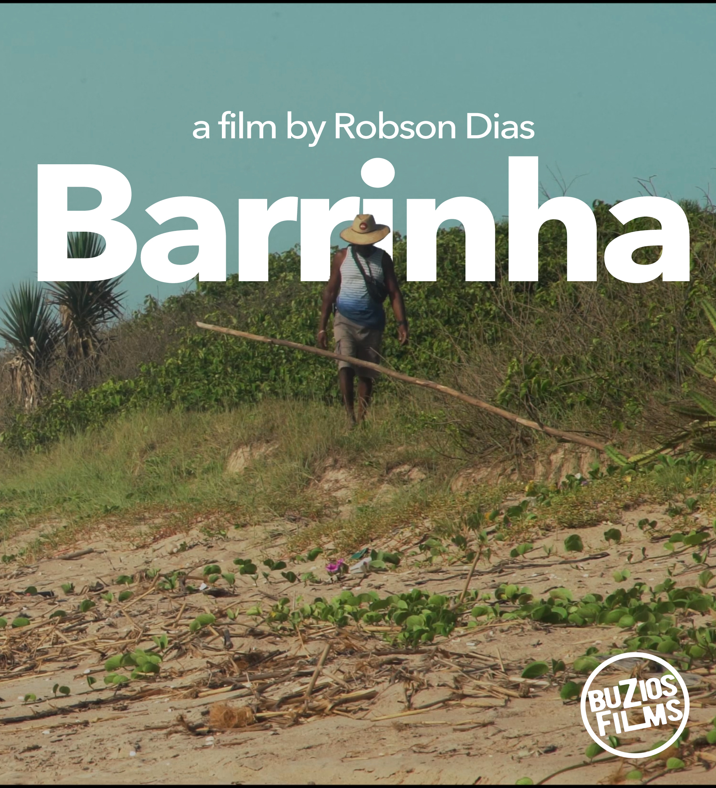
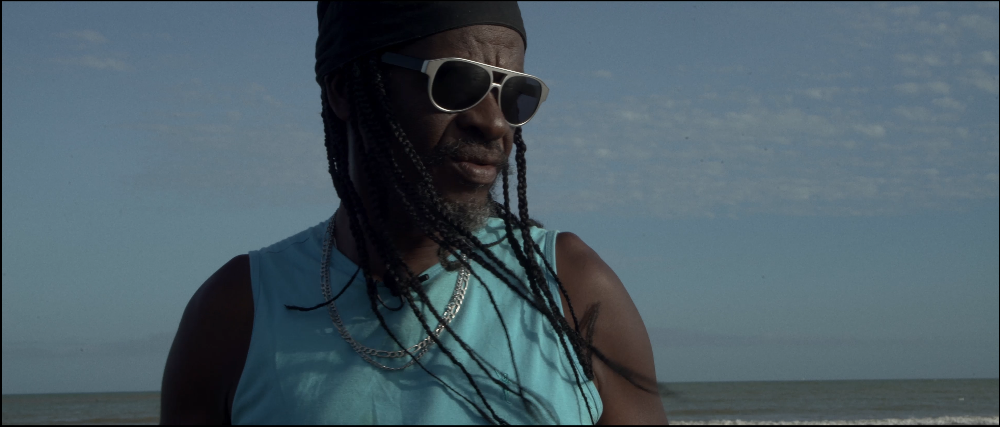
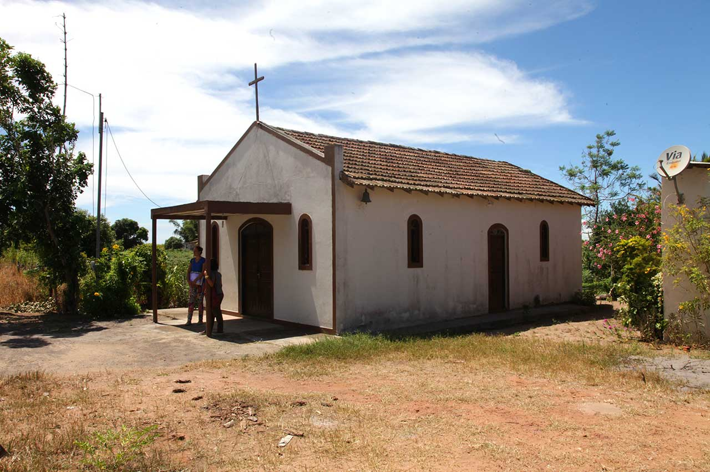

Feature documentary / Brazil–France
Barrinha
um ex-escravizado que, contra as expectativas da época, tornou-se proprietário de sua terra. Descobrir o que nunca foi claramente contado nos livros sobre agentes da resistência negra de Campos dos Goytacazes.
Synopsis
An enslaved man, his family, and the legacy left behind. What remains when even the cemetery refuses to keep the secrets of slavery.
In 2026, the United Nations General Assembly adopted a resolution declaring the trafficking of enslaved Africans and racialized chattel enslavement of Africans as “the gravest crime against humanity,” giving renewed historical and political force to the film’s central wound.
Synopsis ENG
Barrinha follows the traces of an enslaved man, his family, and the fractured legacy that survives across generations. The film asks what is left when memory is buried, silenced, and denied a place to rest.
Set against the enduring afterlife of slavery, the project gains even deeper urgency after the United Nations, in 2026, recognized the trafficking of enslaved Africans and racialized chattel enslavement as the gravest crime against humanity.
Project trajectory
- Projet en développement
- Réalisateur : Robson Dias
- Production : Airelles Production et Selvatica Films
- Recherche centrée sur mémoire familiale, transmission et résistance noire
- Ancrage narratif entre France et Brésil
Why this page matters
Esta página apresenta Barrinha como um projeto em desenvolvimento que articula memória íntima, herança familiar e história coletiva. Ela deve servir para parceiros, produtores, apoiadores e laboratórios compreenderem rapidamente a força política, emocional e cinematográfica do filme.


